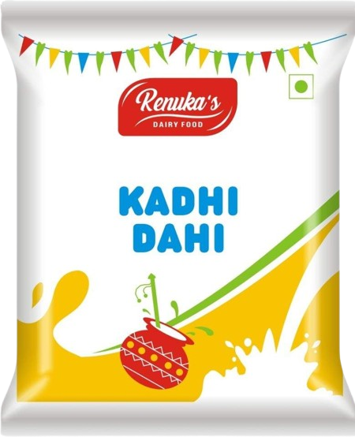

Our Dairy Products
Pure, Fresh & Nutritious Milk Products Direct from Our Farm to Your Family

Gold Milk
SKU Size: 500ml
₹32
₹38
Rich in Protein & Calcium | 6% Fat Content

Double Toned Milk
SKU Size: 500ml
₹28
Low Fat Content | High Nutrition | 3% Fat
Buffalo Milk
SKU Size: 500ml
₹30
Balanced Nutrition | 4.5% Fat | Fortified
Cow Milk
SKU Size: 500ml
₹35
100% Pure Cow Milk | Natural | No Additives

Shrikhand
SKU Size: 500ml
₹40
₹45
Premium Grade | Enhanced Nutrition | 5% Fat

Malai dahi
SKU Size: 500ml
₹25
Ultra Low Fat | Health Conscious | 1.5% Fat

CHEESE
SKU Size: 400ml
₹55
₹60
High Protein | Probiotic Rich | Natural

Fresh Paneer
SKU Size: 250g
₹120
High Protein | Fresh Daily | No Preservatives

Pure Butter
SKU Size: 200g
₹85
₹90
Pure Cream Butter | Rich Taste | Natural

Kadhi dahi
SKU Size: 500ml
₹22
Digestive | Probiotic | Refreshing

Pure Ghee
SKU Size: 500ml
₹350
₹380
Traditional Method | Pure Cow Ghee | Rich Aroma

Mango shreikhand
SKU Size: 300ml
₹35
Traditional Recipe | Refreshing | Natural